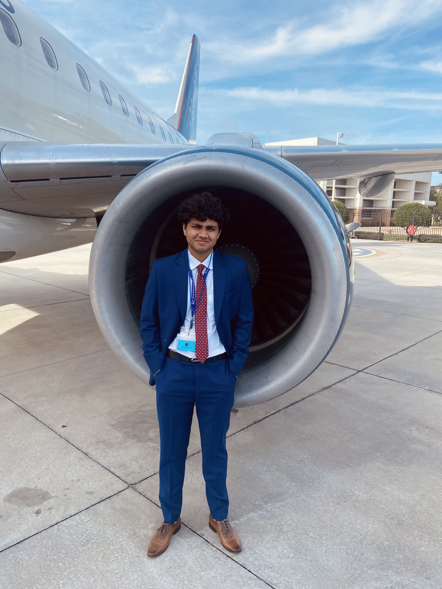

Aerospace Engineer
I'm Anuranan — an international student from India who earned a B.S. in Aerospace Engineering, with a minor in Computer Science, from Embry-Riddle Aeronautical University.
My focus has grown into turbomachinery and propulsion, where I work on blade aerodynamics, thermodynamic cycle analysis, and turbine performance characterization for high-bypass propulsion systems. That foundation extends across structural analysis, flight dynamics and control, and experimental aerodynamics, giving me a broad command of the aerospace design process from first principles to test data. Beyond the core discipline, I bring a genuine software background — building databases, web applications, and computational tools that bridge rigorous engineering analysis with practical, automated workflows.
Design, simulation, and analysis projects spanning propulsion, structures, dynamics, and controls.
Software projects spanning web development, databases, and applied programming.
Internships, research roles, and leadership positions.
Conferences, mentorships, and experiences beyond the classroom.
Download my resume for a full overview of my background.